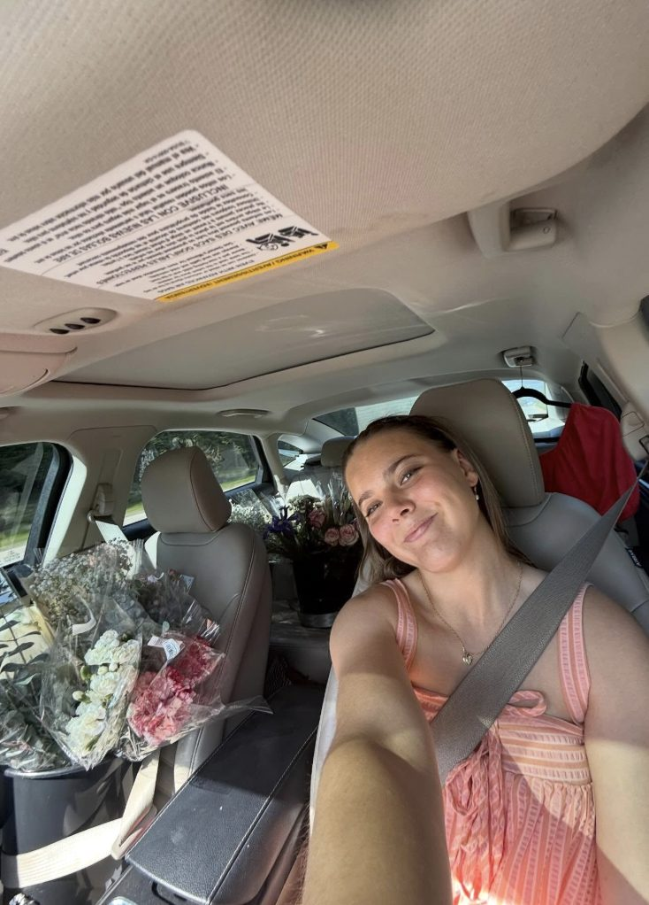

Hi — I'm so glad you're here.
I'm Sydnee, a senior at Ouachita Baptist University and a student ministry intern at The Church at Rock Creek. Flowers by Syd started in January 2024 as a way to bring a little more beauty and joy into the everyday — a birthday, a hard week, a "just because" — and it has grown into something I get to pour my whole heart into.
I believe flowers are one of the simplest, most personal ways to tell someone they matter. Whether it's a wrapped bouquet for your best friend or the florals for your wedding day, I treat every single order like it's for someone I love — because to you, it probably is.
Faith, community, and relationships are at the center of everything I do, in ministry and in this little business. Getting to combine my love for people with my love for flowers has been one of the sweetest surprises of my college years.
How it all started
Flowers by Syd is born
What began as arranging flowers for family and friends turned into a real, running business — one wrapped bouquet at a time.
Senior at Ouachita Baptist University
I'm finishing up my degree while running Flowers by Syd on the side — balancing textbooks and tulips has taught me a lot about time management and grace.
Student Ministry Intern, The Church at Rock Creek
Serving students in ministry keeps me grounded in what actually matters — and it shapes how I show up for every customer, too.
Full-service weddings & everyday joy
From $30 bouquets to full wedding florals, I get to help people mark their biggest days and their smallest ones.
The heart behind every bouquet
Faith
My relationship with God is the foundation for how I run this business and treat every customer.
Community
Central Arkansas is home, and I love getting to serve the people and families right around me.
Relationships
Flowers are personal. I want to actually know the story behind your order, not just take it.
Joy
At the end of the day, I just want to help you make someone's day. That's the whole point.
Craft
Every stem is chosen and arranged by hand — I care about the details as much as the final look.
Heart
This isn't just a side hustle to me — it's ministry with petals instead of words, most days.